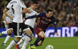
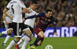

梅西简介
里奥·梅西（Lionel Messi），1987年6月24日出生于圣菲省罗萨里奥市，阿根廷足球运动员。 2000年，梅西加入巴塞罗那俱乐部。2005年，阿根廷青年队夺取世青赛冠军，梅西赢得了金球奖和金靴奖双项大奖。2007年4月18日，梅西在国王杯半决赛对赫塔菲时复制了马拉多纳在世界杯上的连过五人进球。2008年北京奥运会上，梅西随阿根廷国奥队夺取了金牌。2009年底，他当选了欧洲足球先生和世界足球先生。梅西2008-2009赛季率领球队连夺西甲、国王杯和欧冠三个冠军 。2015年8月，当选欧洲超级杯最佳球员。[3] 2015年8月27日，欧洲冠军联赛小组赛抽签暨欧洲最佳球员颁奖典礼在蒙特卡洛的格里马尔迪会议中心举行，梅西获得欧洲最佳球员。[4] 2016年1月12日，梅西荣膺2015年度FIFA金球奖，五度得奖创纪录。
更多>>人物评价


 
 
版权所有